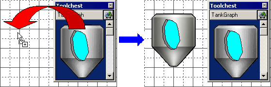
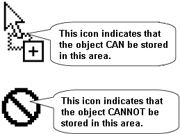
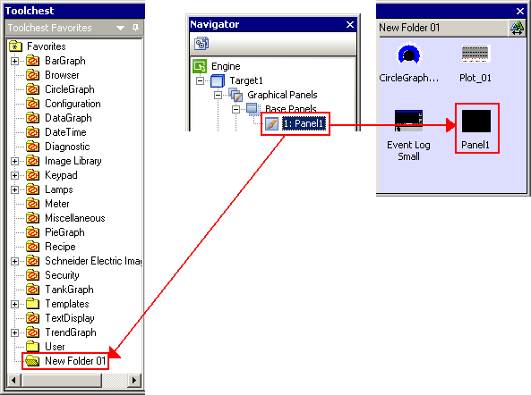
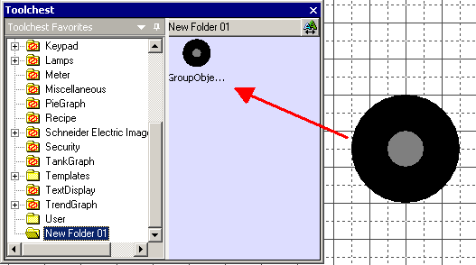

|
|
|
|
|
|
|
|
Use the following Toolchest operations to drag and drop, store, move, and preview Toolchest Parts and objects.
Objects stored in the Toolchest can be dragged and dropped into panels or into nodes in the Navigator.

When you drag and drop an object, the pointer changes shape to indicate whether the object can or cannot be stored in the destination area.

Items other than objects, such as Panels, can be stored in folders and dropped directly into Toolchest folder or the parts view:


Toolchest parts viewed in the editor may not exactly duplicate how they appear on the target machine. This is especially true when you draw objects on top of Toolchest parts. Check the application in simulation and on the target machine to confirm your graphics appear as intended.
When you drag in Toolchest objects that use labels, make sure the font for the object uses the font that you want. If text appears garbled, then the selected font does not support the text that you entered.
For a list of objects that you can store, see Section 21.2.2, Objects You Can Store in the Toolchest.
Click the Toolchest icon  in the menu bar to open the Toolchest window.
in the menu bar to open the Toolchest window.
Select the Toolchest folder that you want to store the object in.
Drag the selected object from the panel and drop it into the Toolchest folder or the parts view.


You cannot add objects to folders that are write-protected. See Section 21.2.3, Working with Toolchest Folders, for more information on creating your own folders to store objects.
Toolchest objects can be dragged and dropped from one folder to another. Objects cannot be dropped into read-only folders.
To move an object from one folder to another:
Click the Toolchest icon  in the menu bar to open the Toolchest window. Click a Toolchest folder to display the Toolchest viewer.
in the menu bar to open the Toolchest window. Click a Toolchest folder to display the Toolchest viewer.
Select the Toolchest folder that you want to move the object into.
Drag the selected object from the Toolchest viewer and drop it into the appropriate folder.
For information about individual Toolchest objects, see Section 10.7, Rotary Lamps and Tower Lamps, Section 13.1.2.2, Historical Trend Graphs, Section 13.1.2.3, Plot Trend Graphs, Section 13.1.2.4, Block Trend Graphs, and Chapter 12, Creating Graphs.